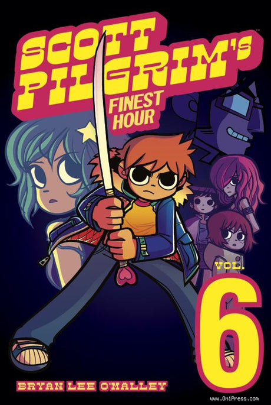

Scott's Finest Hour starts off not-so fine as Scott is having a nightmare, in which he is wandering through his Dream Desert and he sees an image of Ramona. He dashes to it, but it suddenly turns into an image of Gideon who tells him he's waiting, before a flash blinds him. We then go to the real world where it has been four months since Ramona disappeared. He wastes away his time playing video games on his couch despite efforts from Wallace and Stephen to get him to go out, during the latter's visit Stephen reveals he started a new band. That night, Scott has a dream of Ramona impaling him with the Power of Love sword then being attacked by shadow creatures resembling Kim, Knives and Envy. Scott wakes up, very disturbed by the nightmare and heads out to the Cameron House to hear Stephen's latest band.
While there, Scott learns from Monique about Gideon's new club, the Chaos Theatre, which will soon open up soon in town. He also runs into Knives, now 18, and learns she'll be moving away to go to college. Scott offers to have casual sex with her, which she declines. The two reconcile after Knives explains she is slowly getting over Scott and moving on with her life. She offers to make out with him, which he accepts; however, they quickly stop after realizing how horrible it was.
Scott later makes his way to a party for someone named Sarah Jane in a daze, thinking it was for Julie. He meets Young Neil while there and learns that Envy is at the party. He tries to make fun of her when he see her but only ends up embarrassing himself and apologizes profusely to Envy.
The next morning Envy calls and the two go out for coffee to catch up, though Scott can barely keep himself in the conversation. Later, he meets with Wallace who reveals that Envy recently turned 25. Later that night, Scott gets a call from Kim telling him to come visit her. Gideon the cat comes back that night and Scott's able to sleep peacefully. The next day he meets with Envy again and the two talk about their past relationship, though Scott seems to have trouble remembering anything about it, especially the infamous New Year incident. Envy then reveals it was actually Scott who started the fight during the part that led to their break up. Gideon suddenly appears during their conversation, and Scott is intimidated by his presence, so he runs away.
Some time later, Wallace forces Scott to leave town for a "Wilderness Sabbatical" in hopes of getting Scott to clear his head and train for his battle with Gideon. Scott is reluctant but eventually heads north and stays with Kim and her parents. After breakfast one day, Scott and Kim head into the woods for his sabbatical. They talk about what it means to grow up, during which Scott tries to restart his relationship with her. Kim declines however, mentioning how he moved away and neglected to tell her any details on the matter, which she heard about from Lisa. Kim also reveals that the incident with Simon Lee wasn't the epic brawl Scott thought. As it turns out, Simon was actually a nerdy Chinese kid who Kim was dating at the time, and Scott attacked him simply because he saw Simon hug her.
Upon hearing this, Scott's head begins to glow and he once again spots his dark alter ego, Nega Scott and a fight ensues between the two. Kim yells at Scott that he can't keep living like this. Scott retorts that he needs to kill Nega Scott to leave Ramona in the past. Kim however tells him that if he keeps making mistakes, the fight against his dark side will never end, and she doesn't know what will happen if he continues. The words hit Scott hard as he suddenly remembers Ramona, and realizes he has been repressing his love for her to escape reality. The dark side stops its assault and merges back into him as Scott finally acknowledges his mistakes, commenting he doesn't deserve Ramona back. Kim however gives him encouragement tells him to fight and earn her back. She gives him one last kiss before Scott heads back to Toronto.
Meanwhile, Envy and Gideon are preparing for the opening of the Chaos Theatre. Envy, however, is overworked and asks Gideon to take a break. He comments that all the work is necessary, and dressing her up is very fulfilling to him; she retorts that he merely sees her as a doll.
Scott soon arrives back in town and reaches the Chaos Theatre on its opening night to look for Ramona. Along the way he meets up with Wallace, passes by Stephen, runs into Julie Powers and her friends, his sister Stacey, Young Neil (finally acknowledging him as "Neil", which is described as the greatest day in Neil's life), along with Knives and Tamara. The show suddenly begins with Envy being lowered down on the stage beginning her song. The lyrics clue Scott in that Gideon is near him, and the final battle begins. During the fight, Gideon reveals he didn't take Ramona and is surprised that Scott came without her as the nights events were planned around Ramona. Gideon catches Scott with one of his punches, and pulls out Scott's sword, the Power of Love, from his body. Upon learning that Ramona has left him, Gideon offers to make Scott the newest member of the League of Evil Exes. Scott refuses, to which Gideon responds by impaling him with his sword, killing Scott. He then buys everyone a round of drinks.
Scott finds himself in the dream desert lamenting his defeat, when Ramona suddenly tells him he is just having a dream. The two talk, during which Ramona apologizes for leaving Scott so suddenly, and explains she only did so to find herself; not to hurt Scott, though it had the opposite effect. Ramona also reveals that she only came back to make herself apologize to Scott to make herself feel better. Scott stops her mid-sentence with a kiss. Ramona stops him, but Scott tells her that he has already forgiven her, and they might as well make the best of the dream. Ramona reveals that Scott actually is dead; however, the extra life he got back in Vol 3 suddenly appears, and Scott finds himself in the Chaos Theater, revived. Ramona soon arrives coming out of him through Subspace. Seeing this, Gideon falls back on his original plan and reveals seven frozen capsules above the stage. Inside the capsules are six girls dressed in tattered nightgowns, with the seventh capsule empty. Gideon reveals that they are his former girlfriends whom he has kept frozen in order to revive and date at a later time. He wishes for Ramona to join them, to which Ramona declines, thus initiating the final battle.
Gideon reveals his ability to use the Glow as a sort of projectile, and fires it as a wide spray of light at the crowd giving them all the glow, before swiping at Scott and Ramona with his sword. During the battle, Scott and Ramona begin succumbing to the effects of the Glow, which causes them to argue. Between dodging, Scott asks why he is fighting him in the first place since Ramona left him, to which Ramona says she's right here fighting beside him. Scott then asks who started this mess in the first place. Gideon blames Ramona, revealing that after she left him, he got drunk and posted a rant on CraigsList. Much to his surprise, Ramona's Exes responded thus starting the league. Ramona figures they didn't turn evil until after meeting Gideon. She then asks why Gideon wants her back as he only kept pushing her away during their relationship. His Memory Cam indeed proves this, but he refuses to acknowledge it.
Seeing no way to defeat Gideon, Ramona begins to disappear again, but is stabbed by Gideon mid-teleport and mortally wounded. Gideon then realizes how she left him the first time: using The Glow to go into Subspace. He exposes how he got so rich, saying that he used the Glow as emotional warfare by sealing people inside their heads with their issues. He explains that Ramona managed to use it to her own advantage. Gideon then vanishes, laughing evilly as he does. As Ramona lies dying on the floor, she tells Scott that Gideon can literally get inside people's heads - specifically her head. This inspires Scott to enter Subspace too, and so he uses Ramona's bag as a portal into her mind.
Once there, he confronts a twisted form of Gideon, which is seen as a god surrounded by his former girlfriends, including a chained Ramona, who seems head over heels for him. He claims that this was her "innermost desire" and he starts growing in size. Fed up with his arrogance, Scott headbutts Gideon with the Glow, returning Gideon to his original size. Gideon however slashes Scott in half, commenting that not only is he immune to the Glow since he has been trapped in his own mind since childhood, but also that Scott has no power in Ramona's head.
Suddenly, the enslaved version of Ramona transforms into the real Ramona, who has entered her own mind to set things right. She admits that part of her does belong to Gideon, but the other parts of her, which appear in the form of multiple past Ramona designs, are finished with him. Finally free of Gideon's control, she orders him to get out of her head. Gideon agrees to do so, but not before finishing off Scott. The army of Ramonas surge forth to defend Scott just as Gideon moves to deliver the killing blow.
Suddenly, the enslaved version of Ramona transforms into the real Ramona, who has entered her own mind to set things right. She admits that part of her does belong to Gideon, but the other parts of her, which appear in the form of multiple past Ramona designs, are finished with him. Finally free of Gideon's control, she orders him to get out of her head. Gideon agrees to do so, but not before finishing off Scott. The army of Ramonas surge forth to defend Scott just as Gideon moves to deliver the killing blow.
Gideon suddenly grabs Envy and pulls out a sword from her dress commenting he made it in case of emergencies and the three begin the final battle. During the fight, Gideon reveals he was spying on Scott and Ramona through Scott's head via the subspace highway, "spicing up" some of Scott's boring high school memories along the way, which is why Scott was having memory problems throughout the series. This only infuriates Ramona even more, who disarms Gideon leaving him at the mercy of the duo. He comments that getting rid of him won't change anything since they're their own worst enemy. But Scott and Ramona agree together that he's much worse and finish him off with a simultaneous X-Strike. He bursts into $7,777,777 worth of coins which rain down on the crowd (rather painfully). Envy confronts the duo next, but hugs Scott, which he views as closure for their past relationship. Envy also mentions that she wanted a relationship with Gideon but knew it would never work out and quickly gets over and with that event, Envy continues the show as Gideon's ex-girlfriends are released from their capsules.
Afterward, Scott and Ramona meet up with the others who mention the club getting shut down after that night. Scott recalls what happened in the bag, though the other don't seem to believe him, and Ramona reveals where she went after she disappeared; back to her dad's house to try and get herself together though she didn't have as much luck as Scott did. On the elevator ride up from the club, Scott and Ramona reaffirm their relationship and agree to give it another shot. The next night after work, Scott finds out that Stephen is gay and is currently dating Joseph. Scott and Kim try to start a new band called Shatter Band but find they can't play covers very well. Neither of them seem to care, however. The next day, Scott sees Knives off to college, during which she hugs him and mentions he'll always be her "Clash at Demonhead" (though he has no clue what that means). Finally, Scott meets up with Ramona who is waiting for him at a subspace door, ready to begin their relationship anew. With that, they hop into subspace holding hands and disappear into the void, ending the series on a happy note.